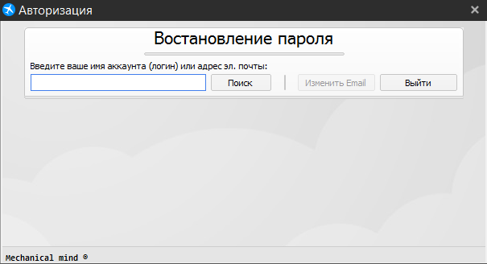
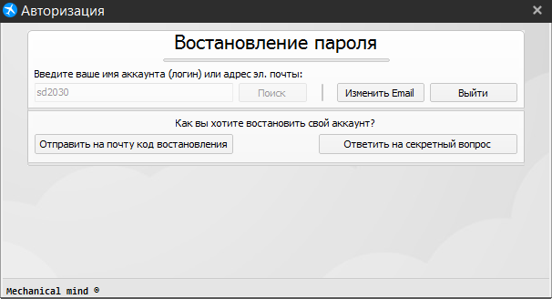
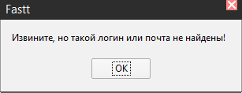

Окно восстановления пароля
Это окно служит для восстановления утерянного пароля от аккаунта. Для восстановления пароля введите логин или адрес электронной почты. После нажмите кнопку “Поиск”. Если вы хотите вернутся к окну авторизации, нажмите кнопку "Выйти".

Если ваш аккаунт существует, то вы можете выбрать два варианта восстановления пароля:
a) Отправить код восстановления на почту
b) Ответить на секретный вопрос

Если вы хотите изменить логин или адрес электронной почты, нажмите кнопку “Изменить Email”.
Если аккаунт с логином или адресом электронной почты не существует, то будет выведена ошибка, указанная ниже:
